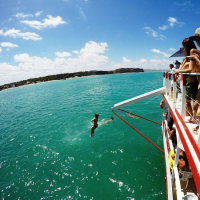
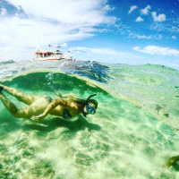
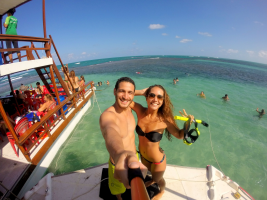
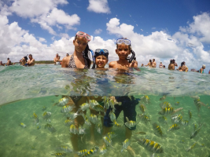
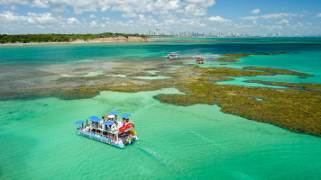

Piscinas naturais do Seixas
Localizadas no ponto mais Oriental das Américas, na praia do Seixas. As Piscinas Naturais do Seixas oferece: lazer, mergulho, aventura. Tudo isso a menos de 1 Km de um dos principais pontos turísticos da capital paraibana, o Extremo Oriental das Américas, durante o passeio, o visitante descobre a beleza e a tranquilidade que só as águas mornas do nordeste podem oferecer.
Assitir o Video
Caribe brasileiro as piscinas naturais do Seixas, um paraíso em João Pessoa As piscinas naturais do Seixas, um cenário paradisíaco que fica pertinho da capital paraibana. Com águas cristalinas que mesclam tons azulados e esverdeados, estas são as maiores piscinas de corais do litoral paraibano, onde é possível observar diversos tipos de peixes coloridos, fazendo mergulho com cilindro ou snorkeling.




